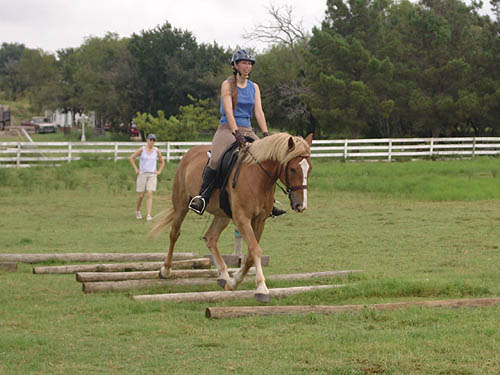
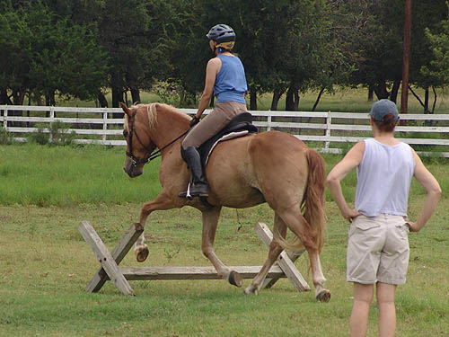

A dressage lesson
on Mo Mo improves with each lesson.
In between lessons
we work on the same old
stuff. Bending, balancing,
softening, and staying steady.
He's willing and responsive,
which goes a long way.
He's getting more consistent
in his trot work, and his
canter is also improving.
Warming up with a little
longer rein.
A little more leg and
getting ready to work.
Nicely holding the bit
and listening.
Looking for more softening,
but we don't want him behind the vertical.
He's figuring things
out.
He's usually very easy
to place on the circle and understands about listening to leg.
He's nice about straight,
and the last ride he was very good about leg yielding.
Our canter strike off.
It could be rounder, but it was obedient.
We're getting canter
work that isn't hollow and resisting the bit.
Coming up a little in
front, but he needed a little balance for heading downhill.
The downward transition
was a bit animated.
And the left lead. It's
a very smooth canter that's easy to sit.
We're glad he's happy
to give the canter, now we'll be working to slow it down in the ring.
Again a more forward
trot coming down from the canter.

Playing over the trot
poles.
We did the cavalletti
at two heights. We wanted him to remember jumping and cantering away, but...

We also wanted him to
take it in a trot stride when ridden in a more dressage frame. We want
him adaptable.